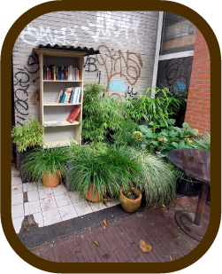

Initiatief
Omschrijving
Voor mijn project individu moest ik een mobiele webste voor een duurzaam initiatief in Amsterdam maken. Ik heb gekozen voor het initiatief een groenere buurt. Dit onderwerp heb ik gekozen, omdat meer planten het broeikaseffect tegen gaat en je met planten de saaie buurt kan opvrolijken.
